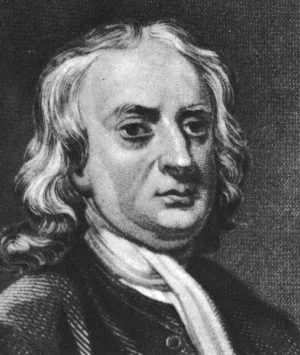

Sir Isaac Newton

In der Zeit nach 1700 war von der damals bekannten Mathematik mehr als die Hälfte Newton zu verdanken. Die "Philosophiae naturalis principia mathematica" oder "Principia" von 1687 gelten auch heute noch als das grösste wissenschaftliche Buch, das je von einem einzigen Mann geschrieben wurde.
Newton ging bald an das Trinity College in Cambridge. Von ihm ist der Ausdruck "Wenn ich etwas weiter sah als andere, so deshalb, weil ich auf den Schultern von Riesen stand". Zu den grössten dieser Riesen zählten Descartes mit seiner analytischen Geometrie; von Kepler erbte er die drei Grundgesetze der Planetenbewegung, und von Galilei übernahm er die beiden ersten Bewegungsgesetze. Doch erst Newton schuf die Bewegungslehre und die Gesetze der Himmelsmechanik
Als noch nicht einmal 25-jähriger erkannte Newton auch erstmals, dass Differential- und Integralrechnung eng und
wechselseitig miteinander durch eine Beziehung verbunden sind. Es ist der
Hauptsatz der
Infinitesimalrechnung  . Newton arbeitete erstmals mit Begriffen wie Variable,
Funktion und Grenzwert, und 1669 - als 27-jähriger - übernahm er den Lehrstuhl für Mathematik (Lucasian Professor in Cambridge).
. Newton arbeitete erstmals mit Begriffen wie Variable,
Funktion und Grenzwert, und 1669 - als 27-jähriger - übernahm er den Lehrstuhl für Mathematik (Lucasian Professor in Cambridge).
1687 wurde die "Principia" der Royal Society vorgelegt. Obwohl nur wenige Zeitgenossen der Grösse des
Geschaffenen folgen konnten, bestaunten viele dieses Wunderwerk an Vereinheitlichung.
Es war auch die Blütezeit der Mathematik. Die besten Köpfe auf dem Kontinent und in England stellten sich gegenseitig
schwierige Aufgaben.
Nicht unerwähnt soll der Prioritätsstreit von Newton mit Leibniz um die Erfindung der Differential- und Integralrechnung bleiben.
Das Brachystochrone Problem: Welche Form hat die Kurve, entlang der ein Körper (ohne Reibung) vom oberen Punkt zum unteren unter Einfluss der Schwerkraft in der kürzesten Zeit heruntergleitet ? Die europäischen Mathematiker hatten Arbeit für etwa sechs Monate, Newton löste die Aufgabe in einem Tag. (Ergebnis: Zykloide)
©1997 - 2026 www.mathematik.ch |🔍